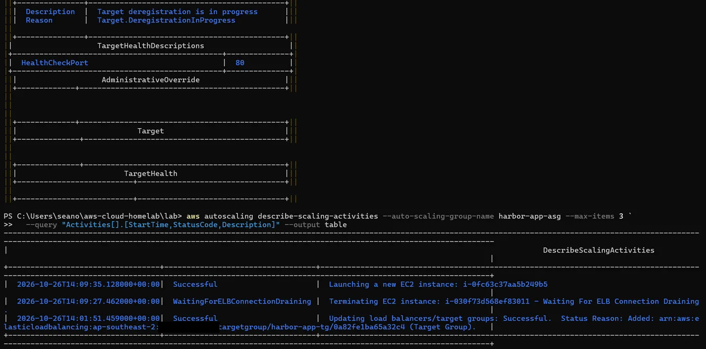
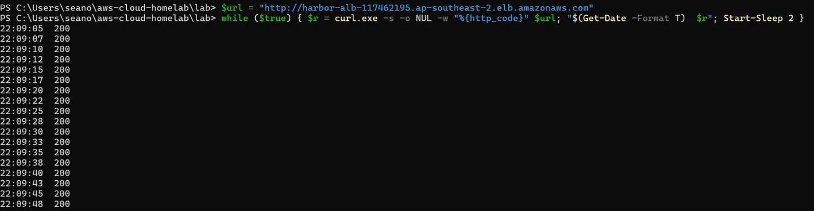
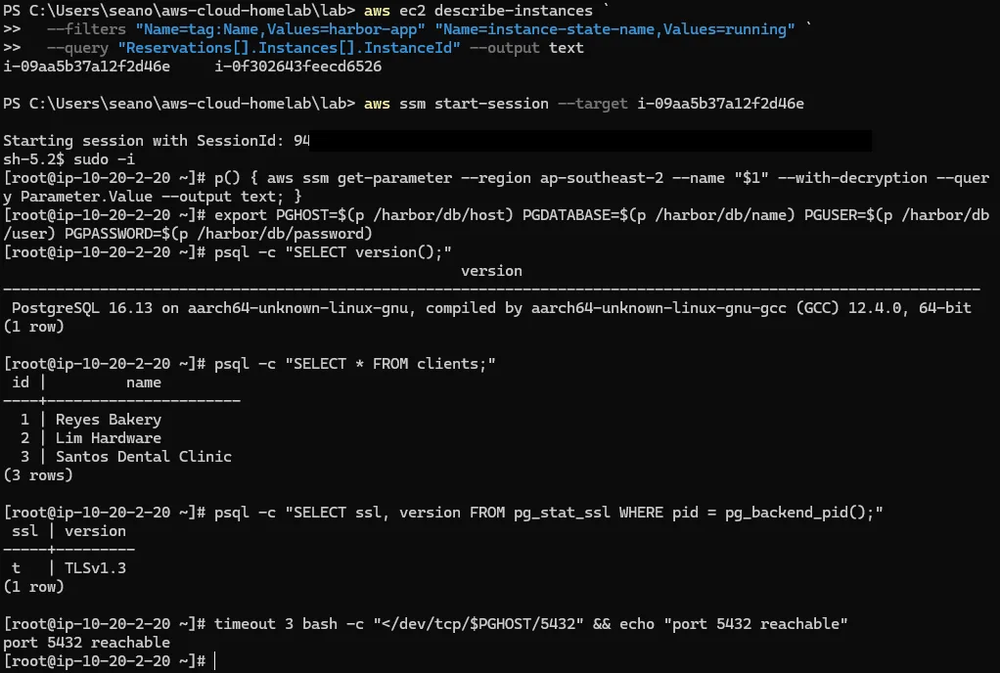
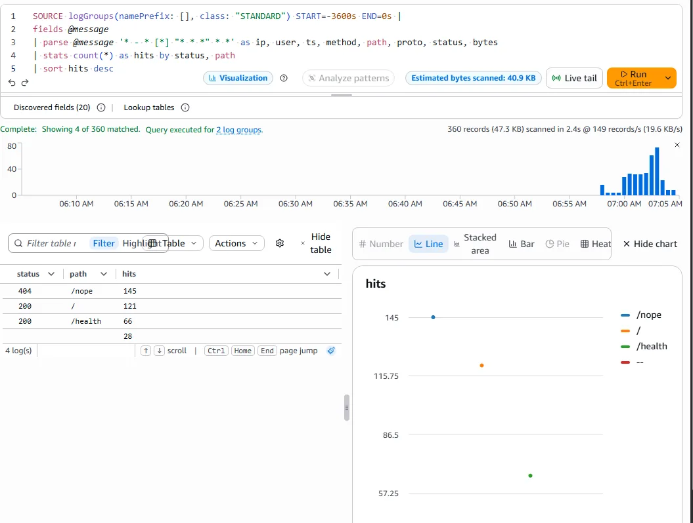
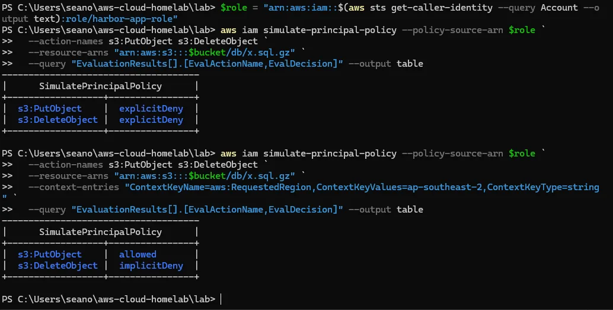
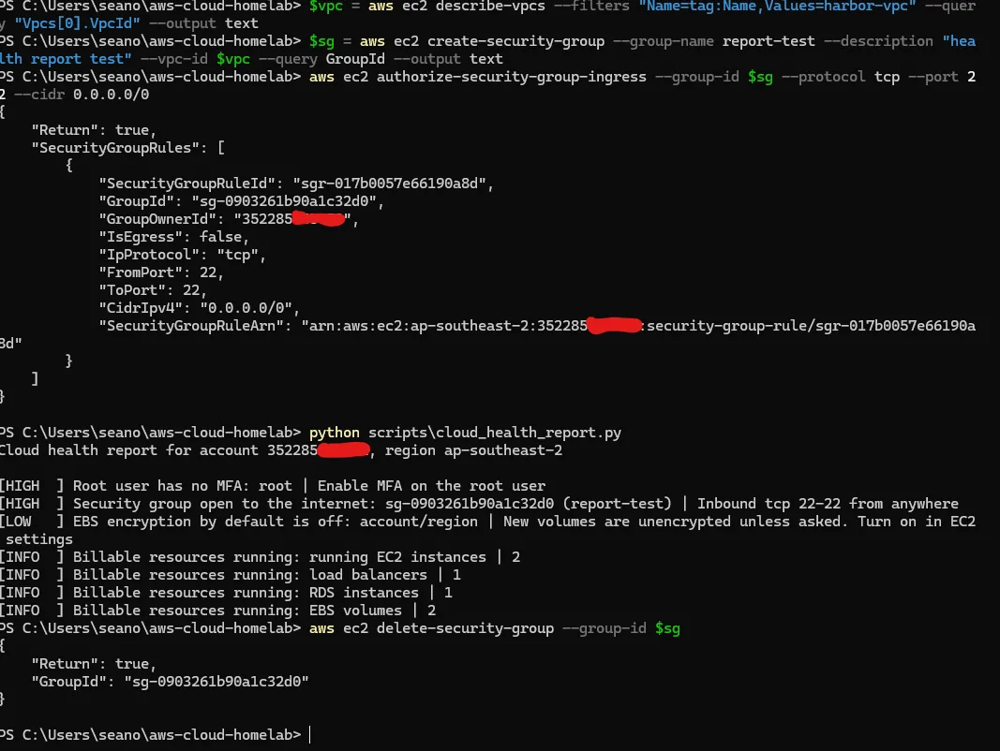

AWS cloud homelab
The client portal of Harbor Point Accounting, a fictional 20-person firm, moved from an office server to AWS and built with Terraform. I built it, broke it on purpose and fixed it the way a cloud support engineer would.
- Type
- Personal learning lab
- Built
- October 2026
- Stack
- AWS, Terraform, Python, Bash, Docker
- Running cost
- About US$0.10 an hour, destroyed after every session

What I built
- Network. One VPC across two availability zones. Public subnets hold the load balancer and web servers; private subnets for the database have no route to the internet.
- Web tier. Two Amazon Linux 2023 servers running nginx in front of a small Python app, in an Auto Scaling group behind an Application Load Balancer. A server that fails its health check is replaced automatically.
- Database. RDS PostgreSQL 16 in the private subnets. Only the web servers’ security group can reach port 5432, and the password lives in SSM Parameter Store as a SecureString, never in the code.
- Backups. A versioned, encrypted S3 bucket. The servers’ IAM role can upload and read backups but cannot delete them.
- Access. No SSH and no open port 22. I connect to the servers through Session Manager.
- Monitoring. The CloudWatch agent ships memory, disk and nginx logs. Four alarms (CPU, unhealthy targets, load balancer 5xx and disk) email me through SNS, and a dashboard shows it all in one place.
- Automation. A Python (boto3) script checks the account for risky settings, such as a security group open to the internet. The app also runs as a Docker image.
- CI. GitHub Actions runs
terraform fmtandvalidateon every push, with no AWS credentials stored in GitHub.
Proof from my account
Every screenshot is from my own AWS account. Select one to open it full size.






What broke, and how I fixed it
This account turned out to be one of AWS’s new-style accounts: one fixed Region, no root sign-in and guardrails set by AWS. The guide didn’t expect that, so a few things broke. I logged nine problems in total; these are the ones worth reading.
| Symptom | Cause | Fix |
|---|---|---|
| Budget alert email stuck at Inactive; verifying it was denied | A service control policy above my account blocks email-recipient verification | Sent the alerts through an SNS topic instead. Write-up |
First terraform apply failed: servers wouldn’t launch | The new IAM role hadn’t reached EC2 yet | terraform untaint, no rebuild. Write-up |
Policy simulator said explicitDeny for an upload that worked | The Region rule above the account; the simulated request had no Region | Added the Region as context. Write-up |
| Terraform found no credentials in a new terminal | The profile environment variable lasts one window | Set it at the start of every session |
What production would do differently
Some choices were made to keep the lab cheap. I wrote down what a real deployment would change:
| This lab | Production | Why the lab differs |
|---|---|---|
| Web servers in public subnets, locked down by security groups | Private subnets plus a NAT Gateway or VPC endpoints | A NAT Gateway costs about US$43 a month in Sydney |
| Single-AZ database, 1-day backups | Multi-AZ, longer retention, deletion protection | Doubles the database cost |
| HTTP on the load balancer’s own name | HTTPS with ACM and a Route 53 domain | Needs a paid domain |
| Local Terraform state | S3 backend with locking | One person, one environment |
This is a learning lab, not production experience. The guide and code were written with AI assistance as a guided walkthrough; I set up the environment, ran every step myself, troubleshot what broke and wrote up what I found.